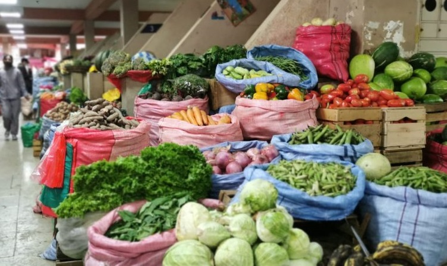
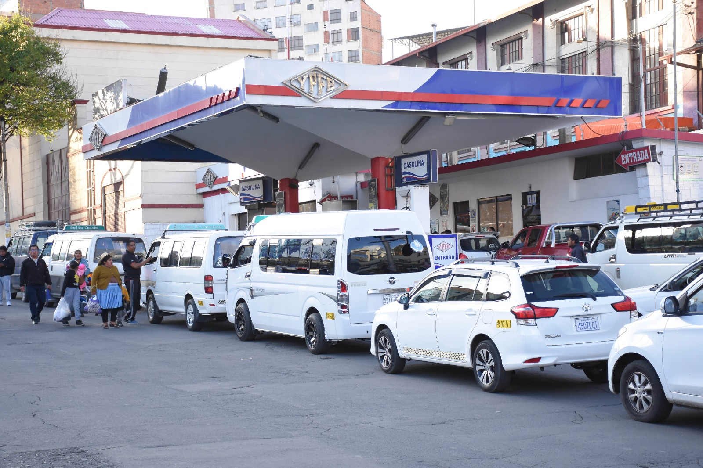

📉 Crisis real: inflación, desabastecimiento y planificación
Simulador educativo que muestra variación semanal de precios de la canasta básica (con valores base del 25 de mayo de 2026), permite planificar compras con presupuesto familiar, y estima si alcanzarás a cargar gasolina según tu posición en la fila y el modelo de tu auto. También verifica billetes sin valor legal (BCB).
🥬 Precios de la canasta (base: 25 de mayo de 2026)
Los precios mostrados como "costo actual" son los del 25/05/2026. Cada semana pueden subir, bajar o mantenerse. Usa el botón para simular una nueva semana.
| Producto | Costo anterior (Bs) | Costo actual (Bs) - 25/05/2026 | Variación semanal | Predicción próxima semana |
|---|
🛒 ¿Alcanza tu presupuesto? Simulador de compras
Resultado del gasto

⛽ Simulador de cola en estación de servicio
Ingresa la hora de llegada de la cisterna, tu modelo de auto, la cantidad total de autos en fila y tu posición. Te diremos si alcanzarás a cargar combustible antes de que se agote.

💰 Billetes sin valor legal · Verificador BCB
Rangos oficiales de Bs10, Bs20 y Bs50 que NO tienen curso legal.
📚 Casos de estudio para probar el simulador (situaciones diarias)
Los precios base corresponden al 25 de mayo de 2026 con los siguientes valores:
- Docena de pimientos: 15 Bs (antes 10 Bs)
- 3 libras de zanahoria: 5 Bs (antes 8 Bs)
- 3 libras de cebolla verde: 15 Bs (antes 5 Bs)
- 3 libras de locoto: 10 Bs (antes 25 Bs)
- 3 libras de vainita: 20 Bs (antes 12 Bs)
- Unidad de piña: 20 Bs (antes 12 Bs)
🥬 Evolución semanal de precios
Ejemplo: Durante la primera semana de junio, los pimientos suben un 12%, la zanahoria baja un 8% y la cebolla verde se mantiene. Esto muestra la volatilidad del mercado.
🛒 Planificación de compras
Una familia con presupuesto de 200 Bs el 25/05/2026 quiere comprar 2 docenas de pimientos (30 Bs c/u) y 1 piña (20 Bs). Total = 80 Bs → alcanza. Si el presupuesto fuera 60 Bs, no alcanzaría.
⛽ Fila en la gasolinera
Cisterna llega a las 16:00, hay 12 autos en fila, tú vas en la posición 7 con un auto moderno (45 L). La cisterna tiene 1500 L. Los autos anteriores consumen en promedio 44.75 L c/u → combustible necesario hasta tu turno ≈ 313 L → sí alcanzas. Tu atención sería aproximadamente a las 16:14.
💸 Billetes sin valor legal
Un comerciante recibe un billete de Bs10 con serie 67250001. Según el BCB, ese billete NO tiene valor legal y debe ser rechazado. En cambio, un billete de Bs20 con serie 12345678 es válido.
📊 Reflexión y utilidad del modelo
Esta herramienta educativa permite visualizar cómo la variación semanal de precios afecta el poder adquisitivo, y cómo la posición en una fila y el tipo de auto determinan si se obtiene combustible en contexto de escasez. El validador de billetes evita pérdidas económicas.